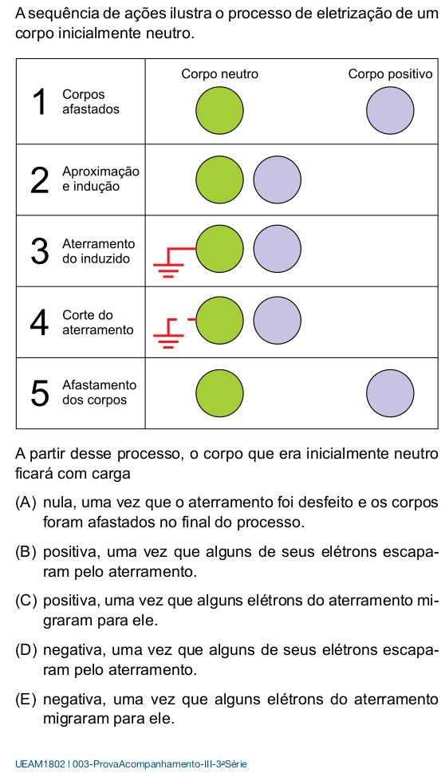
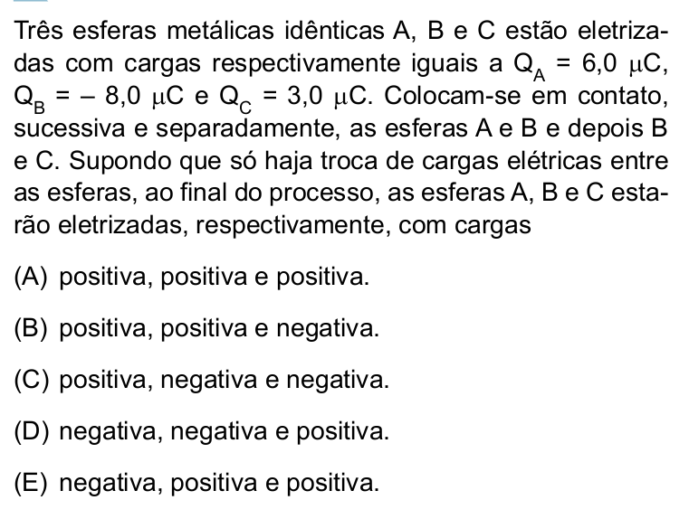
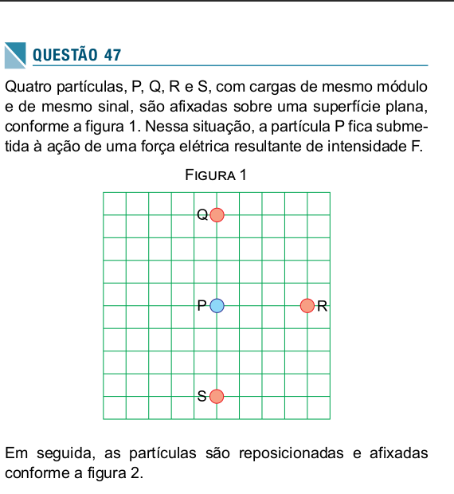
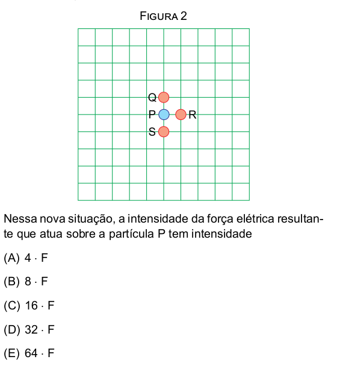

Banco de Imagens - Física em Resumos
Banco de Imagens do Projeto Física em Resumos
Este arquivo contém todas as imagens encontradas nos arquivos .org do projeto, organizadas com os modelos HTML apropriados.
Imagens Externas (HTTP/HTTPS)
Força Resultante
Força Resultante - Diagrama de Forças.

Fonte: https://commons.wikimedia.org/wiki/File:Forca-resultante.png, licença CC


Força Resultante - Segundo Diagrama.

Fonte: https://commons.wikimedia.org/wiki/File:Forca-resultante-2.png, licença CC


Força Resultante - Terceiro Diagrama.

Fonte: https://commons.wikimedia.org/wiki/File:Forca-resultante-3.png, licença CC


Leis de Newton
Lei da Gravitação Universal de Newton.

Fonte: https://commons.wikimedia.org/wiki/File:NewtonsLawGravitation.png, licença CC BY-SA 4.0


Lei de Ação e Reação (3ª Lei de Newton).

Fonte: https://commons.wikimedia.org/wiki/File:Action-reaction-law.svg, licença CC BY-SA 4.0


Movimento Circular - Primeira Lei de Newton.

Fonte: https://commons.wikimedia.org/wiki/File:Circular_motion_-_Newton_first_law.svg, licença CC BY-SA 4.0


Hidrostática e Fluidos
Princípio de Funcionamento do Macaco Hidráulico.

Fonte: https://commons.wikimedia.org/wiki/File:Working_principle_of_a_hydraulic_jack.svg, licença CC


Transmissão Hidráulica entre Duas Seringas.

Fonte: https://commons.wikimedia.org/wiki/File:Hydraulic_transmission_between_two_syringes.svg, licença CC BY-SA 4.0


Flutuação e Afundamento de Objetos.

Fonte: https://commons.wikimedia.org/wiki/File:Floating-and-sinking-2.svg, licença CC


Medição de Deslocamento.

Fonte: https://commons.wikimedia.org/wiki/File:Displacement-measurement.svg, licença CC BY-SA 4.0


Eletrostática
Linhas de Campo e Equipotenciais em um Condensador.

Fonte: https://commons.wikimedia.org/wiki/File:Lineas_del_campo_y_equipotenciales_en_un_condensador.png, licença CC BY-SA 4.0


Imagens Locais
Questões UEA
Questão UEA SIS3 2014-1.

Fonte: criado pelo autor.
Questão UEA SIS3 2018.
Fonte: criado pelo autor.
Questão UEA SIS3 2016.

Fonte: criado pelo autor.
Questão UEA SIS3 2014.
Fonte: criado pelo autor.
Questão UEA SIS3 2019.

Fonte: criado pelo autor.
Questão UEA SIS3 2016-1.

Fonte: criado pelo autor.
Questão UEA SIS3 2019-2 Parte 1.
Fonte: criado pelo autor.
Questão UEA SIS3 2019-2 Parte 2.
Fonte: criado pelo autor.
Gráficos e Logos
Gráfico 2 - Pré-Física.

Fonte: criado pelo autor.
Logo do IFAM.
Fonte: criado pelo autor.